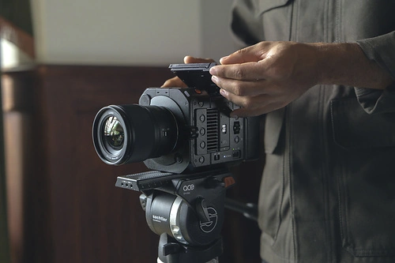
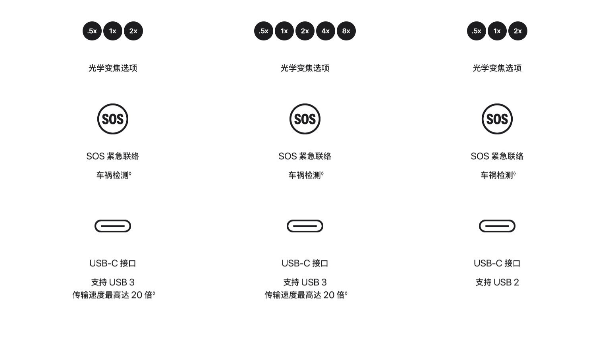
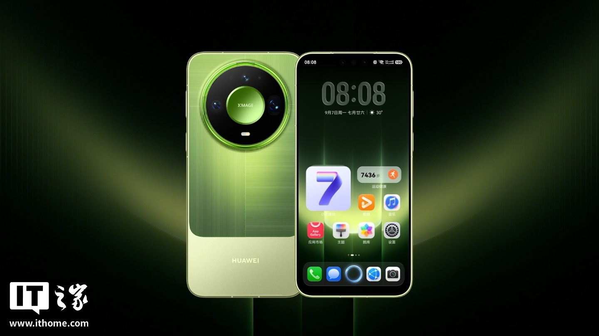
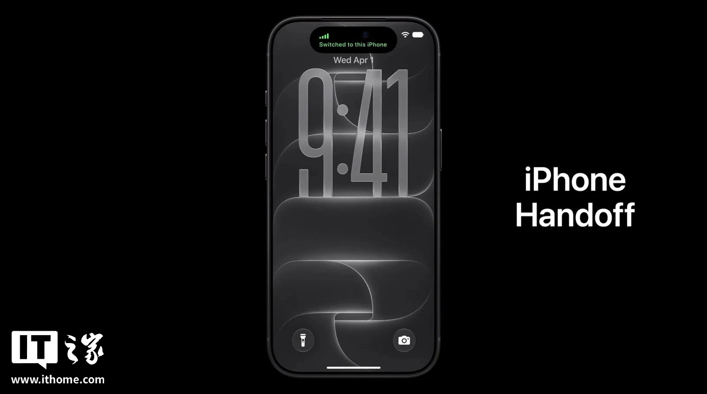
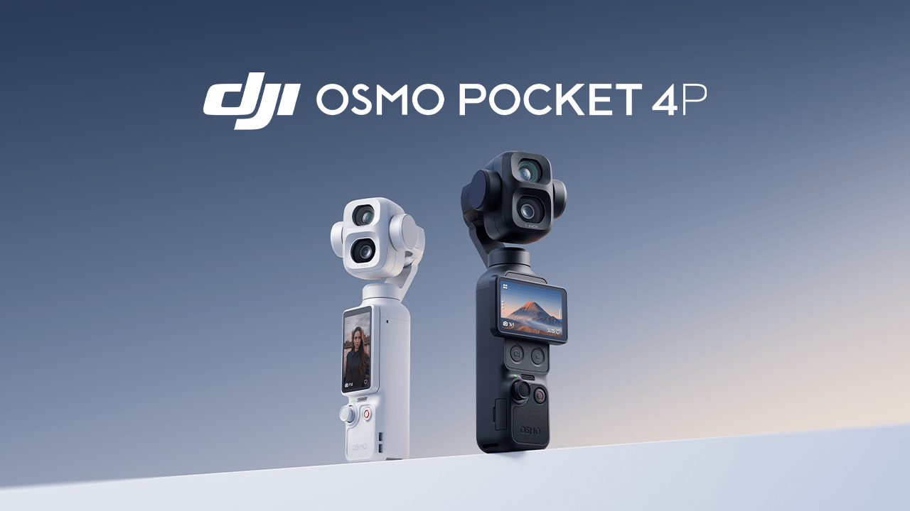

뉴스
기술의 변화, 매일 한눈에.
카메라 · 스마트폰 · AI, 해외 테크 소식을 모아 전합니다.
최근 발행2026-11-20
새로 들어온 소식
최신 뉴스
전체 4,478개 기사"Samsung 스마트폰 시스템 역사상 가장 큰 변화": One UI 10 첫 배너 공개, 유리 질감, 블러 그라데이션

Panasonic, 원격 생산 환경을 위한 새로운 전동 줌 렌즈 개발
OPPO, ColorOS 11월 업데이트 내용 공개: 안드로이드 스마트폰 간 터치 전송 등 지원
OpenAI 스마트폰 시장 진출, 폭스콘 그룹 조립 주문 확보
OpenAI 스마트폰 조립 주문, 폭스콘 FIH Mobile에 할당… 2027~2028년 출시 예상

Obsbot, 1인치 CMOS 센서, AI 트래킹 2.0 및 수직 영상 촬영을 위한 회전 렌즈를 탑재한 Tail Air 2 출시
모토로라 Edge 70 Neo 스마트폰 사양 공개: Qualcomm 스냅드래곤 7s Gen 3, 6.8인치 1.5K 144Hz 디스플레이

IT 모닝 브리핑 1119: Luxeed, 독립 자동차 생산 자격 획득; 둥밍주, Gree 이익 감소에도 알루미늄 대신 구리 사용; Apple, 공급업체에 성명 철회 압박, iPhoneDuo 힌지 논란 격화; Huawei HarmonyOS 7 기기 점유율 82% 돌파...

정부 보조금 1,000위안: iPhone 18 Pro Max, 징둥에서 10,999위안 → 9,745위안 (행사 종료 임박)

카운터포인트: 스토리지 비용 급등으로 인도 플래그십 스마트폰, 2026년 말까지 2025년 대비 30% 이상 가격 인상 예상
인도 안드라프라데시주, 실리콘 웨이퍼 공장에 최대 80% 국보 제공

Huawei Pura X View 바 타입 스마트폰, HarmonyOS 7.0.0.115 업데이트로 데스크톱 AI 바로가기 바 추가
Huawei Mate X8 폴더블 디스플레이 스마트폰, 가상 터치패드 지원으로 "한 손으로도 대화면을 쉽게 조작"

Huawei Mate 90 시리즈 스마트폰, HarmonyOS 7.0.0.115 업데이트 배포, 완전한 3D 공간 배경화면 기능 "조용히" 출시

Huawei Mate 90 Air, 트리플 카메라 전 초점 거리 홍펑(红枫) 이미지 지원, '6으로 시작하는' 두께로 기록 경신

Huawei HarmonyOS Galaxy Interconnect, iPhone 통화 전환 지원 공식 발표, 현재 Mate 90 시리즈, XT 2 비범 마스터 모델 지원
Google, 2027년 4월부터 Play 스토어 안드로이드 앱 폴더블 디스플레이 스마트폰 지원 의무화

Apple 아이폰 핸드오프에 대항: 구글 안드로이드, '듀얼 스마트폰 공유 번호' 기능 Fast Switch 개발 중

Galaxy S26 Ultra, One UI 9.5 베타와 함께 새로운 5배 인물 사진 모드 옵션 추가
Fujifilm X Summit 파리 2026 행사, 12월 2일 개최 확정

DJI, Osmo Pocket 카메라 등 여러 제품 가격 인상
검색 결과가 없습니다
다른 검색어를 입력하거나 필터를 초기화해 보세요.